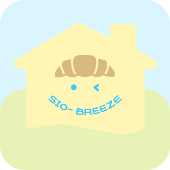
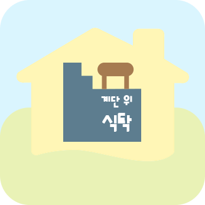
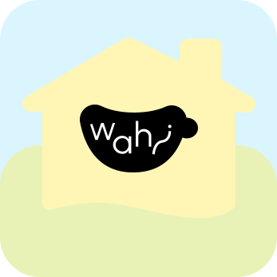
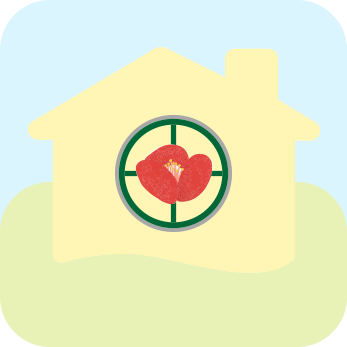
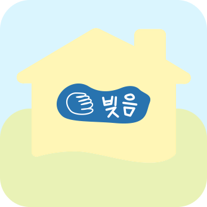

부산소상공인들과
부사네가 함께 합니다.
부사네 입점 브랜드들을 소개합니다.


부산소상공인들과
부사네가 함께 합니다.
부사네 입점 브랜드들을 소개합니다.
카페, 음식

시오브리즈

계단 위 식탁

와히 (Wahi)

동백서실
남항상회 (南港商會)
JP74
라이프
오드 포트(Eau de Port)
온휘
문구, 기록
끼룩 (Kki-ruk)
윤슬인화소
공방
아틀리에 제로 (Atelier Zero)

물결빚음
소상공인 파트너십 관련 문의는 언제든 환영합니다.


♥ CS 고객사랑 서비스 본부
이메일 : busane@gmail.com
채팅 상담 : 카카오톡
채널톡
상담 시간: 09:30 ~ 18:00
(점심시간 12:00 ~ 13:00)
© 2026 Busane. All rights reserved.
♥ 부사네 SNS